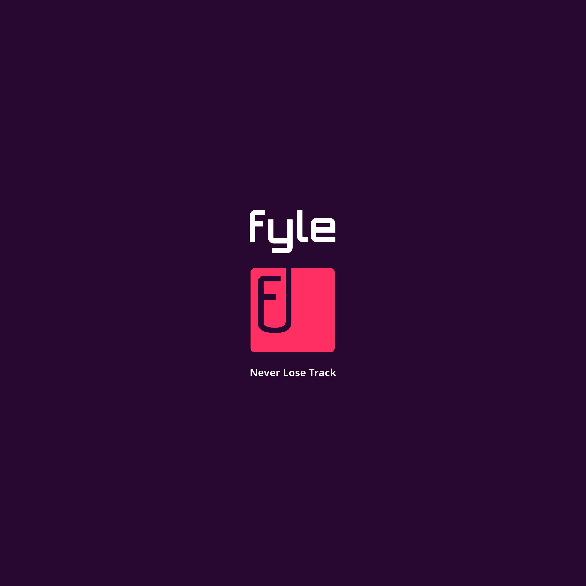

<ion-app>
  @if (isLoading) {
    <div class="splash-screen">
      
    </div>
  }
  @if (isSwitchedToDelegator) {
    <app-delegated-acc-message></app-delegated-acc-message>
  }
  <app-sidemenu (switchDelegator)="switchDelegator($event)" #sidemenuRef></app-sidemenu>
  @if (showFooter) {
    <ion-footer>
      <app-fy-footer
        (homeClicked)="onHomeClicked()"
        (taskClicked)="onTaskClicked()"
        (cameraClicked)="onCameraClicked()"
        (expensesClicked)="onExpensesClicked()"
        (reportsClicked)="onReportsClicked()"
        [activeState]="currentActiveState"
        [taskCount]="totalTasksCount"
      ></app-fy-footer>
    </ion-footer>
  }
  <ion-router-outlet id="main-content" [ngClass]="{ 'main-outlet': isSwitchedToDelegator }"></ion-router-outlet>
  <app-fy-connection></app-fy-connection>
</ion-app>
